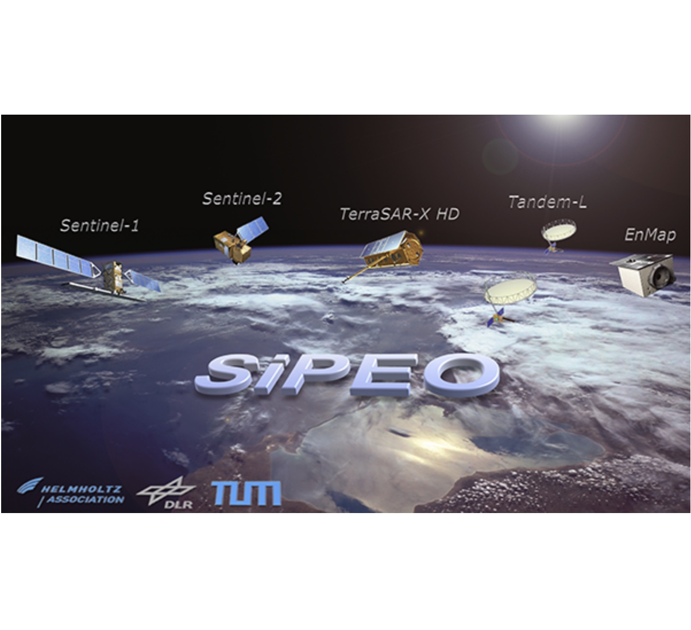

I'm interested in computer vision, machine learning, and image processing.
Graduate Capstone Project, AI Agent Engineer, Sep 2026 – Present
LLM agent engineering and optimization. Engineered and iteratively optimized the prompt architecture, conversation workflows, guardrails, and tool-calling behavior of production AI service agents for automotive dealerships, increasing service appointment booking completion from 40% to 80% of production calls with booking intent and reducing hallucinations and incorrect tool usage from 30% to 5% of calls.
LLM evaluation and regression testing. Built and maintained a golden dataset of 100 multi-turn conversations covering service workflows, edge cases, state transitions, and tool-calling behavior; ran regression evaluations across agent changes to validate improvements and prevent degradation of existing capabilities.
Graduate Assistant, Machine Learning, Jul 2025 – Present
Vizling: zero-shot image segmentation. Developed and evaluated a VLM-based zero-shot image annotation tool. Used Qwen3.5 for comprehensive scene understanding and structured annotation parsing, Google OWL-ViT for text-driven object detection, and Google PaliGemma for multi-object segmentation, iteratively validating outputs for accuracy before hand-off.
Vizling: fine-tuning a vision-language model. Fine-tuned Qwen3.5-4B using LoRA on a custom image-to-JSON instruction dataset, collapsing the two-stage scene understanding and structured parsing pipeline into a single, end-to-end process; verified JSON schema conformance and output correctness across test cases.
Machine Learning Engineer, Sep 2023 – Dec 2024
Agentic RAG system for finance compliance intelligence. Built and tested an AI-based compliance assistant using agentic retrieval-augmented generation (RAG) to identify and summarize finance regulations for new financial products. Developed a multi-step reasoning agent for semantic document search, compliance categorization, and citation-based summaries, validating outputs against source documents for accuracy.
Few-shot user intent classification. Built, evaluated, and deployed a multi-label intent classifier for a debt collection product using few-shot learning (DSPy + GPT-4, F1 = 0.85; RoBERTa + SetFit, F1 = 0.87), using cross-validation to benchmark and select the best-performing approach before shipping.
Retrocausal Redmond, Washington (Remote)
Research Engineer, Jul 2022 – Sep 2023
Retroactivity: video understanding module. Worked on supervised and unsupervised fine-grained human activity segmentation at video and dataset levels using both frames and skeletons (2D/3D pose). Implemented and tested an algorithm for unsupervised action segmentation by detecting action boundaries, which was validated and deployed on the iPad version of Retroactivity.
OMNO AI Lahore, Pakistan
Machine Learning Engineer, Sep 2021 – Jul 2022
SportsEye. AI-powered football analytics platform. Track every movement on the pitch using broadcast streams to run our analysis, without any extra hardware to be installed on stadiums. Player and Ball Detection using Single Stage Detectors. Player tracking and re-identification using deep sort. Broadcast view classification using custom CNNs. Field Line Masking using Pix2Pix GANs. Camera Pose estimation with classical Homography estimation. Timer localisation using EAST detector and recognition using OCR based methods.
RetailWiz. Targeted Ad platform for retail stores. Designed and implemented the AI pipeline for smart gondola capable of person tracking and profiling gender, age and emotions from the facial crop and use it for targeted advertisement. Optimized the pipeline for memory on Jetson Nano by writing a custom Python wrapper for TensorRT C++ (2 YOLOv5 detectors, 2 binary classifiers).
Adlytic. Audience Analytics platform for retail stores. Implemented the pipeline capable of footfall counting with age and gender classification, area-wise heatmap generation and dwell time. Developed APIs to help KPI dashboard consume the analytics. This system is deployed using docker in 50+ different retail stores and analytics are above 90% accurate. (YOLOv5, DeepSORT, BYTETrack).
Machine Learning Consultant, Aug 2020 – Aug 2021
Regeneron Pharmaceuticals. Platform for data analysis of Patient Wearable Devices. Developed a platform using Apache Nifi for data ingestion, PySpark for ETL and post-ingestion, Hive and AWS Redshift for analytics, and AWS S3 for cloud storage. Performed gait analysis using machine learning (ML) algorithms on time series-data from sensors of Moticon device. Classified the human activity using ML algorithms on time-series data from accelerometer of Actigraph device, cross-checking model predictions against ground truth for quality control.

Research Intern, Summer 2019
Slum mapping in satellite imagery using deep learning. Collected the image data on slums for Karachi and Islamabad, filtered the data. Used the Fully Convolutional Networks (FCN) to segment the slums from non-slums. Using loss functions to characterize the class imbalance since in majority of slum datasets the foreground pixels are dominant. Implemented transfer learning and adversarial domain adaptation to align embeddings of the Karachi and Mumbai slum datasets. An extension of this work is my bachelor's thesis (final year project).